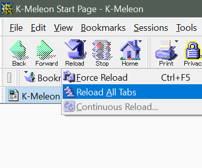

Archetypal
I created the Archetypal theme based on the layout of Netscape Navigator 4. Unlike common browsers which offer minimal control over web navigation, Netscape gave users an almost overwhelming amount of controls. This made it perfect to test out the various features of K-Meleon and its skin system. The name is based on the idea that Netscape was a fundamental part of our collective imagination of what the web was and what it could be. To use this theme:
-
Download the .zip file below.
-
Extract the .zip file and place the Archetypal folder in your K-Meleon/skins/ folder or profile/skins/ folder.
-
Open K-Meleon and press F2 to open the preferences window. Choose the HighResolution skin and set your toolbar size.
-
Restart K-Meleon for changes to take affect.
Download Archetypal
Screenshots
Tips
This theme offers a lot of buttons. The small grip button beside the URL bar locks and unlocks the toolbars. Right-click it to see a list of available toolbars. The "guide" button will search the K-Meleon forums rather than a search engine. You may notice a little arrow on many buttons, these indicate that there is considerable functionality available in the right-click menu for that button. The go button is the default location for XUL-based extensions to place their buttons. The privacy bar menus are available from a toolbar button now. If you're adding toolbar buttons to a theme be sure to check out menuicons.cfg as its comments list menu locations in the browser for most of the command icons.
Links

↑ K-Meleon Tools Home ↑
The Archetypal theme for K-Meleon was assembled by R.J.J. III, Copyright © 2022. The basis for this theme was the NetscapeModern theme from Eyes-Only. Little content from his original theme remains, but I am very grateful for his work getting me started and have included his special thanks and information sections that were present in his own theme in the readme file. Most images trace their origin back to Netscape-era artwork used by Mozilla. I used many images from Michael Walden's FOXSCAPE theme for Mozilla Firefox © 2014. Mozilla and Firefox are registered trademarks of the Mozilla Foundation. Netscape, Netscape Navigator, and Netscape Communicator are registered trademarks of Netscape Communications. All art assets from Michael Walden's theme were used under the Creative Commons - Attribution-NonCommercial - ShareAlike 3.0 Unported license. Original and derivative assets that I created for this theme are also available under the same license. The full text is available at: https://creativecommons.org/licenses/by-nc-sa/3.0/
{kind=link}
{kind=link}